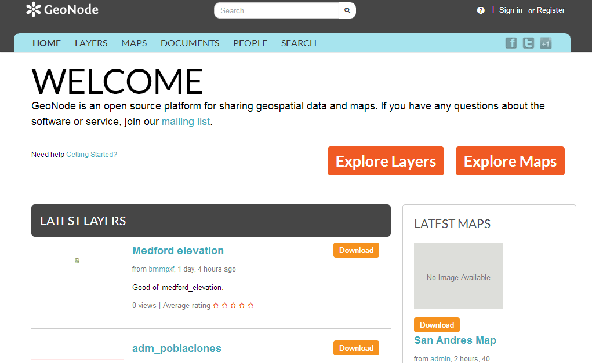

A tour of GeoNode¶
In order to get started, let’s look at the GeoNode interface and get a feel for how to navigate around it.
The GeoNode web interface is the primary method of interacting with GeoNode as a user. From this interface, one can view and modify existing spatial layers and maps, as well as find information on other GeoNode users.
Without being logged in, you are limited to read-only access of public layers.
Navigate to you your GeoNode instance, available here:
Welcome page
This page shows a variety of information about the current GeoNode instance. At the top of the page, a toolbar exists showing quick links to view layers, maps, documents (metadata), people ADD LINK, and a search field. Below this is a listing of recently updated layers, including abstract, owner, rating, and download button (if available).
Click the Layers link in the toolbar to go to the Explore Layers page.

Explore Layers page
This page shows all layers known to GeoNode, available in either List or Grid viewing. Layers can be sorted by Most Recent, Most Popular, or Most Shared. Also available are a list of categories, with which layers can be connected with.
Find a layer and click on its name.

Viewing a layer
A layer viewing page will display, with the layer itself superimposed on a hosted base layer (in this case MapQuest OpenStreetMap). Explore this page, noting the various options available to you.
Now click the Maps link in the tool bar to go to the Explore Maps page.

Explore Maps page
This page shows all maps known to GeoNode, available with similar viewing options as with the layers. Currently, there are no maps here, but we will create one later on in the workshop.
Click the Search link in the toolbar to bring up the Search page.

Search page
This page contains a wealth of options for customizing a search for various information on this GeoNode instance. While a simple search box is available at the top of every page, this search from allows for much more fine-tuned searches.
Now that you are familiar with the basic interface, the next step is to create your own account so you manage some GeoNode resources of your own.